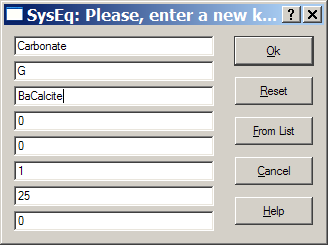
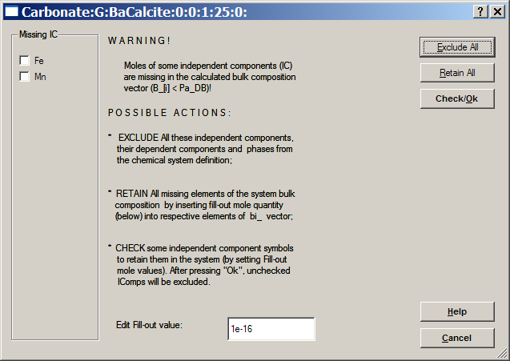
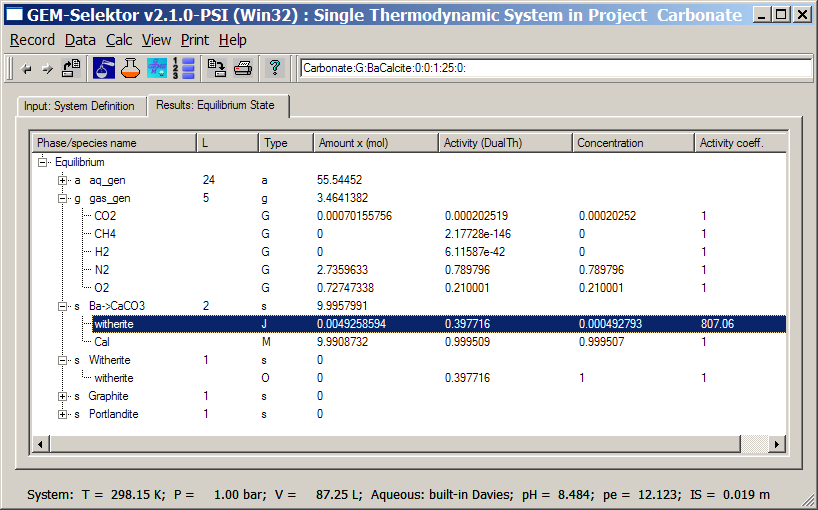
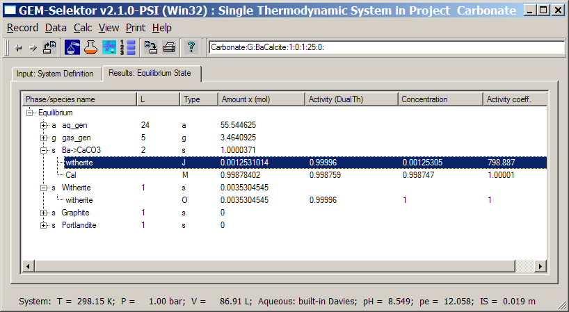

Previous Page Back to Start Page
(37) Opening the modelling project after extending its database
After adding some IComp, DComp, ReacDC, Phase and Compos records to the "Carbonat" project database, as described in previous pages of this tutorial, you should open the modelling project again to upgrade it and use the extended chemical system definitions. This process is mostly automatic; usually, you will just have to confirm some actions of the program.(38) Re-calculating equilibria in the upgraded project
Click on the
"Single-System Equilibria
(SysEq)" button to get into the "Single Thermodynamic System" dialog.
There, you should already see two new solid solution phases and the
"Witherite" phase in the "Phase/Species name" list. Execute the
"Record" "Create" menu command and set the record key as shown below:

Click "Ok" to proceed and
then "Ok" to the Remake dialog if it appears. You have already learned
how to set
"recipes" and calculate single equilibria at the beginning of this
Screenshot Tutorial. Give the following recipe in the "Compos" page of
the "System" window:
Aqua 1000 g
AtmAirNit 100 g
BaCO3 1 g
CaCO3 1000 g
NaCl 1 g
Put also comment lines
like "Ba-calcite + air at
high s/w ratio"
and "Exercise 4 of
GEMS-PSI Screenshot Tutorial" on top of the form
(recommended).
Change to the main "Single
Thermodynamic System" dialog and switch off the "Aragonite" and
"Calcite" phases; then calculate bulk composition of the system
(the  toolbar button). You may receive a warning
dialog shown below.
toolbar button). You may receive a warning
dialog shown below.

The above dialog appears
because we did not specify anything for Fe and Mn in the "recipe" for
bulk composition of the new chemical system; the program does not know
whether
this has been done as a mistake or deliberately. As we do not intend to
consider iron and manganese in this system at all, click on the
"Check/Ok" button to exclude Fe, Mn and all their species and phases
from the actual system definition.
Now, run the GEM
calculation of equilibrium state (the  toolbar button). You should obtain this or similar speciation:
toolbar button). You should obtain this or similar speciation:

The "witherite" end
member has now a large activity coefficient of 807 which makes its
activity (ca. 0.4) much larger than the concentration in the
"Ba->CaCO3" phase (ca. 0.0005). This is the result of highly
non-ideal mixing (described by the regular Redlich-Kister model) - a
consequence of the fact that calcite structure badly accomodates Ba2+
which has a much larger cationic radius than Ca2+.
Note that the single
"Witherite" phase does not appear because the total dissolved barium
concentration at equilibrium with the "Ba->CaCO3" solid solution
phase (0.142 millimolal) is lower than
that at equilibrium with pure witherite. The number for witherite in
the "Activity (DualTh)" column is the saturation index which is less
than 1 and shows that aqueous solution is undersaturated to pure
witherite, even though it is saturated to Ba-calcite with 0.0005 mole
fraction of barium.
Obviously, if we
would take less CaCO3 into the bulk composition of the
system, we could expect that pure "Witherite" phase also appears at
equilibrium together with highly non-ideal Ba-calcite solid solution.
"Clone" this SysEq
record assigning a new key "Carbonat:G:BaCalcite:1:0:25:0" and change
the addition of CaCO3 PCO from 1000 g to 100 g; then calculate the
equilibrium state again. The result will be as follows:

We see that the "Witherite" pure phase is now saturated and appears together with the "Ba->CaCO3" solid solution, at total dissolved Ba concentration 0.284 millimolal - a solubility of pure witherite in this system. The mole fraction of "witherite" end-member in the solid solution is now 0.00125, which is the limiting solid "solubility" due to the non-ideality effects.
Now, various effects on
SSAS system behaviour can be modelled by "cloning" new SysEq records or
creating Project Simulators.
Next Page